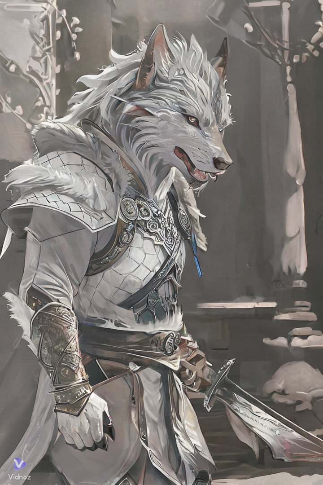

LUDOVIC
Devenir développeur web pour allier mon côté créatif et mon sens de l’esthétique avec le code.
Ce qui me permettrait de donner vie à des idées et de créer des interfaces à la fois belles et
fonctionnelles.